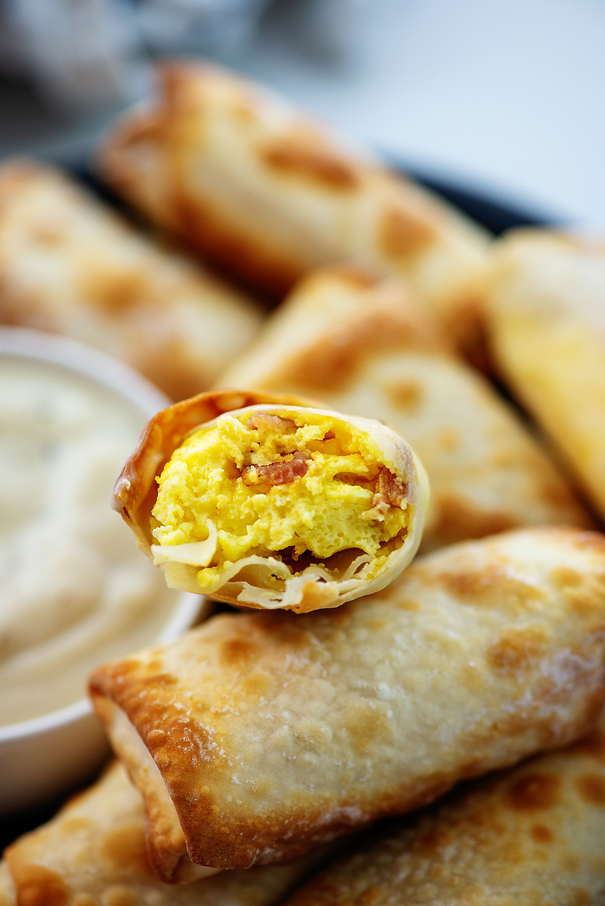

Breakfast Egg Rolls

Description
A fun take on a breakfast classic. Traditional egg roll wrappers are used to hold scrambled eggs, sausage, bell peppers and cheese.
Ingredients
- 10 eggs
- 1 red bell pepper, diced
- Ground sausage (I prefer turkey sausage)
- Egg roll wrappers
- Shredded cheddar cheese
Steps
- Brown the sausage in a pan over medium heat.
- Remove and drain the sausage.
- Add the bell peppers to the pan and sautee for ~5 minutes.
- Return the drained sausage to the pan.
- Add the eggs to the pan.
- Season with salt and pepper.
- When the mixture is beginning to bind, add shredded cheese.
- Remove from heat when mixture is sufficiently binded.
- Preheat oven to 400 degF.
- Fill each egg roll wrapper with a spoonful of the mixture. Use cold water to close the wrapper.
- Place filled wrappers on a greased sheet pan.
- Once all wrappers are on the pan, spray each with a small amount of cooking spray.
- Cook for 22 minutes, flipping halfway.
- Remove and enjoy!